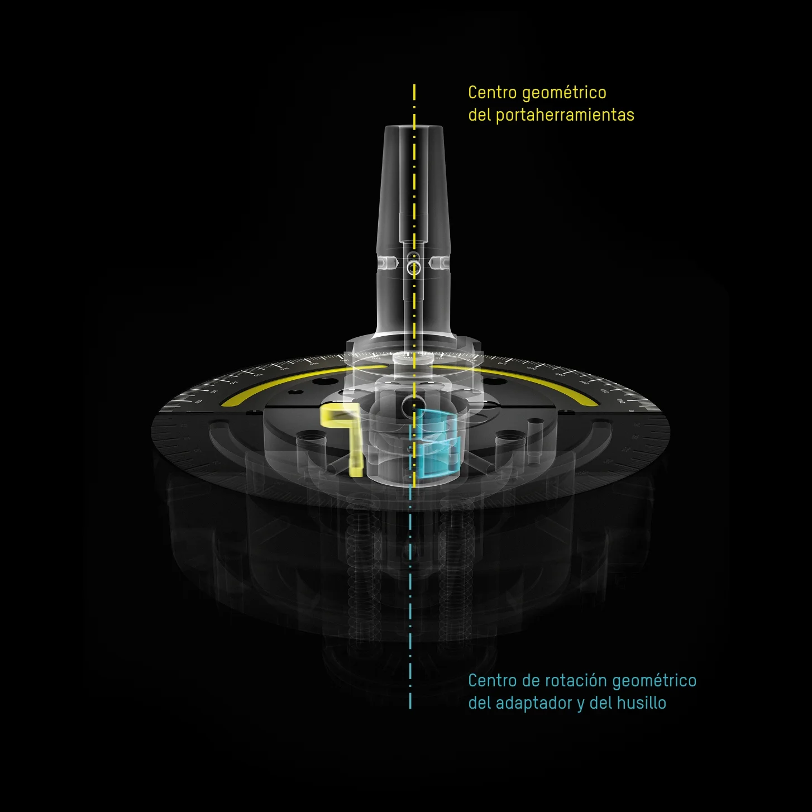

»toolBalancer«
El sistema de balanceo con tecnología de vanguardia
y diseño ergonómico

Apostamos por el progreso inteligente
Con herramientas balanceadas de forma óptima y con alta precisión, logrará una mayor vida útil de las herramientas, un mayor tiempo de funcionamiento del husillo y una mejor calidad superficial de sus piezas. Con »toolBalancer«, no solo balanceará sus herramientas, sino toda su producción, logrando un balanceo perfecto entre sostenibilidad, eficiencia y progreso.

Comprobado por TÜV y UL/CSA.
Base sólida de 500 kg.
Mejores resultados de equilibrado: < 0,4 gmm.
La interacción de alto rendimiento

Cubierta de seguridad »twinPanel«
Cubierta de seguridad »twinPanel«
Corresponde a la norma DIN ISO 21940-23 clase C60 para una seguridad máxima.
El «disco sacrificable» interior captura la suciedad, por ejemplo, los restos de lubricantes refrigerantes y el deterioro causado por el desprendimiento de componentes. De este modo, se tiene en cuenta el proceso muy importante y a menudo ignorado del envejecimiento de los discos protectores, que se produce por el uso diario. Gracias al cambio rápido y económico del disco de sacrificio, el ZOLLER »twinPanel« garantiza la seguridad de sus operarios de forma permanente.
husillo de alta precisión
Husillo de alta precisión
Admite prácticamente cualquier portaherramientas con el adaptador de equilibrado correspondiente. El husillo gira la herramienta en función del peso con una velocidad regulable de 400 a un máximo de 1200 revoluciones por minuto y mide el desequilibrio con una precisión de < 0,4 gmm.
En el diseño del husillo de alta precisión, ZOLLER prestó un enfoque particular al proceso de cambio de adaptadores seguro y certificado. Un elemento de diseño en particular evita accidentes y deterioros causados por adaptadores de equilibrado no atornillados en el husillo.
Compartimento para adaptadores
Compartimento para adaptadores con tapa frontal basculante|orientable
Tres puntos de descarga para un cambio de adaptador ergonómico, rápido y sin dañar la espalda, sin necesidad de agacharse.
hueco de la horquilla
Hueco para horquilla
Para una instalación flexible y un transporte sencillo del »toolBalancer« en su planta de producción con ayuda de una carretilla elevadora.
Software de operación ZOLLER
Software de manejo sencillo de ZOLLER
La representación gráfica estructurada guía de forma intuitiva al operador a través del proceso de medición y equilibrado.
La configuración de la máquina se realiza mediante la entrada de los datos geométricos de la herramienta. Todos los datos se almacenan en la base de datos y están disponibles para su uso posterior.
Unidad de control »cockpit«
Unidad de control independiente »en la cabina«
Se puede ajustar en altura y posición, así como la inclinación del monitor, y se puede desplazar fácilmente a la posición deseada, lo que hace que sea sencillo operar el software.
Además del manejo táctil, la »cabina« ofrece la posibilidad de introducir datos mediante ratón y teclado, así como compartimentos para impresoras de etiquetas y láser, escáneres manuales y herramientas como llaves Allen.
Cubierta de seguridad »twinPanel«
Cubierta de seguridad »twinPanel«
Cubierta de seguridad »twinPanel«
Corresponde a la norma DIN ISO 21940-23 clase C60 para una seguridad máxima.
El «disco sacrificable» interior captura la suciedad, por ejemplo, los restos de lubricantes refrigerantes y el deterioro causado por el desprendimiento de componentes. De este modo, se tiene en cuenta el proceso muy importante y a menudo ignorado del envejecimiento de los discos protectores, que se produce por el uso diario. Gracias al cambio rápido y económico del disco de sacrificio, el ZOLLER »twinPanel« garantiza la seguridad de sus operarios de forma permanente.
husillo de alta precisión
husillo de alta precisión
Husillo de alta precisión
Admite prácticamente cualquier portaherramientas con el adaptador de equilibrado correspondiente. El husillo gira la herramienta en función del peso con una velocidad regulable de 400 a un máximo de 1200 revoluciones por minuto y mide el desequilibrio con una precisión de < 0,4 gmm.
En el diseño del husillo de alta precisión, ZOLLER prestó un enfoque particular al proceso de cambio de adaptadores seguro y certificado. Un elemento de diseño en particular evita accidentes y deterioros causados por adaptadores de equilibrado no atornillados en el husillo.
Compartimento para adaptadores
Compartimento para adaptadores
Compartimento para adaptadores con tapa frontal basculante|orientable
Tres puntos de descarga para un cambio de adaptador ergonómico, rápido y sin dañar la espalda, sin necesidad de agacharse.
hueco de la horquilla
hueco de la horquilla
Hueco para horquilla
Para una instalación flexible y un transporte sencillo del »toolBalancer« en su planta de producción con ayuda de una carretilla elevadora.
Software de operación ZOLLER
Software de operación ZOLLER
Software de manejo sencillo de ZOLLER
La representación gráfica estructurada guía de forma intuitiva al operador a través del proceso de medición y equilibrado.
La configuración de la máquina se realiza mediante la entrada de los datos geométricos de la herramienta. Todos los datos se almacenan en la base de datos y están disponibles para su uso posterior.
Unidad de control »cockpit«
Unidad de control »cockpit«
Unidad de control independiente »en la cabina«
Se puede ajustar en altura y posición, así como la inclinación del monitor, y se puede desplazar fácilmente a la posición deseada, lo que hace que sea sencillo operar el software.
Además del manejo táctil, la »cabina« ofrece la posibilidad de introducir datos mediante ratón y teclado, así como compartimentos para impresoras de etiquetas y láser, escáneres manuales y herramientas como llaves Allen.
Llegue a su destino de manera segura y rápida
»toolBalancer« hace que el balanceo de herramientas sea muy sencillo: gracias a la cubierta de seguridad »twinPanel« de diseño ergonómico, al cómodo teclado de membrana, al compartimento para adaptadores de balanceo y a los compartimentos en la amplia zona de trabajo.
El software de manejo de ZOLLER, con su representación gráfica estructurada, guía de forma intuitiva al operador a través del proceso de medición y balanceo. Mediante las opciones de software correspondientes, todas las aplicaciones de balanceo están disponibles en 1 o 2 niveles, como la compensación fija con tornillos de balanceo o el uso de anillos para balanceo o el balanceo mediante la eliminación de material, como el taladrado o el fresado.

Abrir la cubierta, corregir
el desequilibrio (por ejemplo, mediante tornillos de equilibrado).

Cerrar la cubierta e iniciar la prueba de control,
resultados de medición de la prueba de control.
Nuestros adaptadores, confiables y exactos
La selección de adaptadores de equilibrado ZOLLER de alta precisión, con su diseño único, le permite el amarrado de accionamiento mecánico y, sobre todo, seguro de mandriles SK, HSK y conicidad de mango poligonal con una precisión de repetición sin precedentes.
Otros adaptadores disponibles bajo pedido.
Desde el centro hacia la máxima precisión
El desbalanceo de las herramientas se debe a un diseño asimétrico y a la consiguiente distribución asimétrica de la masa. «toolBalancer» aborda el problema con un enfoque coherente: para medir y equilibrar las herramientas utiliza un desplazamiento respecto al centro en el adaptador de equilibrado, lo que permite realizar el proceso de medición y corrección de forma precisa y eficiente.
El adaptador de equilibrado con desplazamiento respecto al centro está diseñado con un sistema de dos puntos y una pieza de presión. Esto da como resultado una señal del sensor más grande y mejor medible y garantiza resultados de equilibrado de alta precisión, en particular con una alta calidad de equilibrado y un desequilibrio pequeño.

El balanceado significa tranquilidad para las herramientas
Cuando las herramientas en rotación no giran de manera uniforme, se producen oscilaciones. Estas pueden provocar un mayor desgaste de herramienta, una pérdida de calidad en las superficies y cargas adicionales en los husillos de la máquina, incluso a bajas velocidades. Por lo tanto, revise regularmente sus herramientas en un equipo de equilibrado de ZOLLER.
Obtenga más información sobre las ventajas del equilibrado con la solución ZOLLER.

»toolBalancer 550«
¡Elija de forma sencilla y con vista general o póngase en contacto con nosotros! Diámetro máximo de la herramienta: 480 mm, longitud máxima de la herramienta: 550 mm
»toolBalancer 750«
¡Elija de forma sencilla y con vista general o póngase en contacto con nosotros! Diámetro máximo de la herramienta: 480 mm, longitud de la herramienta: 750 mm